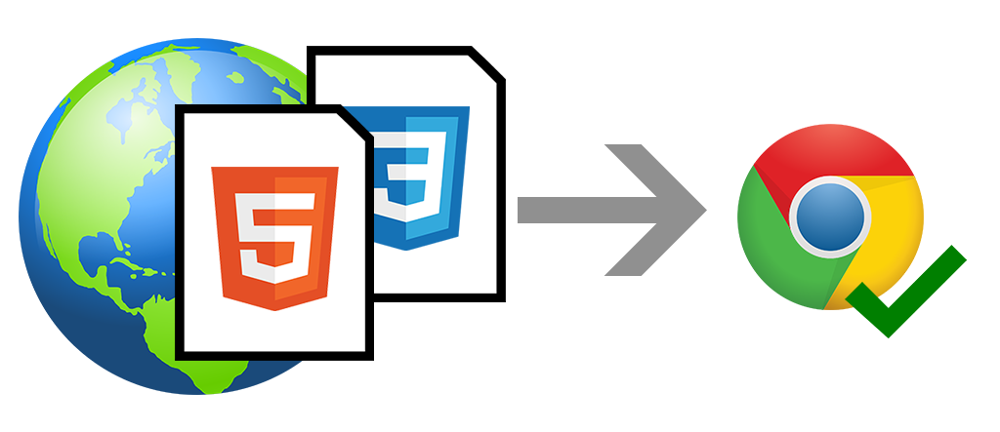
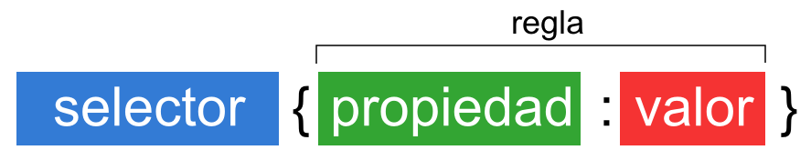
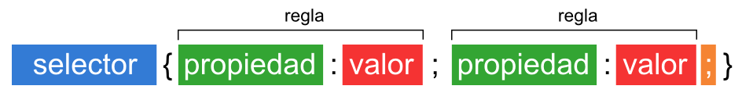
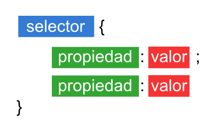
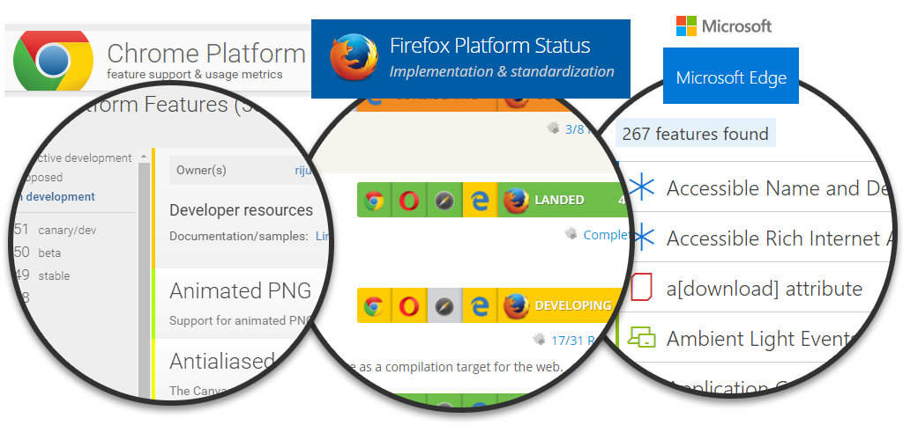
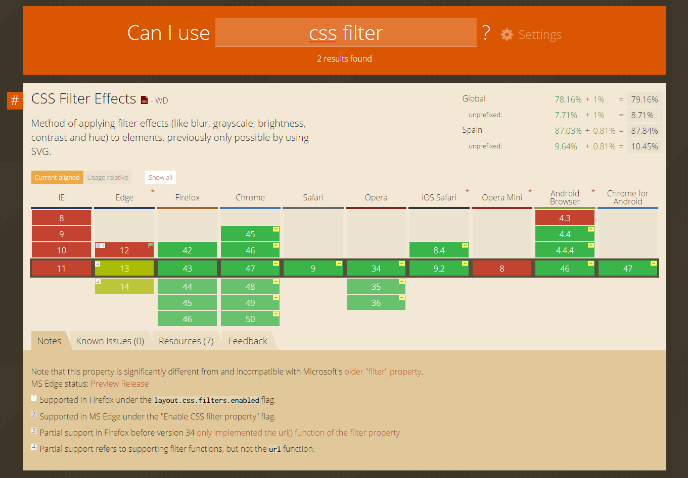
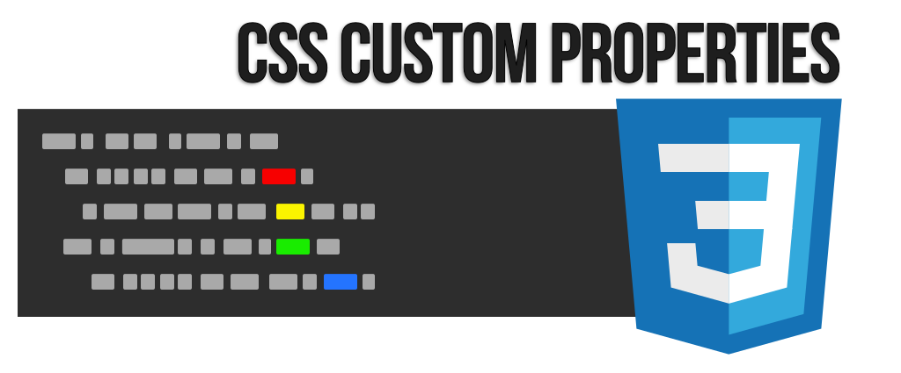

Introducción a CSS¶

¿Qué es CSS?¶
Si te gusta el mundo del diseño web o tienes curiosidad por empezar en este ámbito, probablemente ya habrás escuchado el término CSS. Se trata de una tecnología utilizada para dotar de cualidades visuales y estéticas a una página web. Si nunca has tocado esta materia, comprobarás que se trata de una forma analítica, lógica y casi matemática de crear páginas web, pero gracias a ella podemos simplificar la creación de páginas y conseguir exactamente lo que buscamos.
La curva de aprendizaje de CSS suele ser sencilla (puede ser algo compleja si nunca has programado o eres totalmente ajeno a estas temáticas), pero a medida que cometes errores y vas practicando, tu capacidad para escribir código CSS mejora de forma exponencial, permitiéndonos avanzar a un ritmo cada vez más veloz.
¿Qué es realmente CSS?¶
Antes de comenzar, debes tener claro un concepto clave: una página web es realmente un documento de texto. En dicho documento se escribe código HTML, con el que se que crea el contenido de una web. Por otro lado, existe el código CSS, que unido al código HTML permite darle forma, color, posición (y otras características visuales) a una página.
En resumen, se trata de un idioma como podría ser el inglés o el alemán, que los navegadores web como Chrome o Firefox conocen y pueden entender. Nuestro objetivo como diseñadores y programadores web es precisamente ese: aprender el idioma.

Las siglas CSS (Cascading Style Sheets) significan «Hojas de estilo en cascada» y parten de un concepto simple pero muy potente: aplicar estilos (colores, formas, márgenes, etc...) a uno o varios documentos (generalmente documentos HTML, páginas webs) de forma masiva.
Se le denomina estilos en cascada porque se aplican de arriba a abajo (siguiendo un patrón denominado herencia que trataremos más adelante) y en el caso de existir ambigüedad, se siguen una serie de normas para resolverla.
La idea de CSS es la de utilizar el concepto de separación de presentación y contenido, intentando que los documentos HTML incluyan sólo información y datos, relativos al significado de la información a transmitir (el contenido), y todos los aspectos relacionados con el estilo (diseño, colores, formas, etc...) se encuentren en un documento CSS independiente (la presentación).

De esta forma, se puede unificar todo lo relativo al diseño visual en un solo documento CSS, y con ello, varias ventajas:
-
Si necesitamos hacer modificaciones visuales lo hacemos en un sólo lugar y no tenemos que editar todos los documentos HTML en cuestión por separado.
-
Se reduce la duplicación de estilos en diferentes lugares, por lo que es más fácil de organizar y hacer cambios. Además, al final la información a transmitir es considerablemente menor (las páginas se descargan más rápido).
-
Es más fácil crear versiones diferentes de presentación para otros tipos de dispositivos: tablets, smartphones o dispositivos móviles, etc...
¿Cómo usar CSS?¶
Antes de comenzar a trabajar con CSS hay que conocer las diferentes formas para incluir estilos en nuestros documentos HTML, ya que hay varias, cada una con sus particularidades y diferencias.
En principio, tenemos tres formas diferentes de hacerlo, siendo la primera la más común y la última la menos habitual:
| Nombre | Método | Descripción |
|---|---|---|
| CSS Externo | Etiqueta <link> |
El código se escribe en un archivo .css a parte. Método más habitual. |
| CSS Interno | Etiqueta <style> |
El código se escribe en una etiqueta <style> en el documento HTML. |
| Estilos en línea | Atributo style="..." |
El código se escribe en un atributo HTML de una etiqueta. |
Veamos cada una de ellas detalladamente:
Enlace a CSS externo (link)¶
En la cabecera de nuestro documento HTML, más concretamente en el bloque <head></head>, podemos incluir una etiqueta <link> con la que establecemos una relación entre el documento actual y el archivo CSS que indicamos en el atributo href:
<link rel="stylesheet" href="index.css" />
De esta forma, los navegadores sabrán que deben aplicar los estilos que se encuentren en el archivo index.css. Se aconseja escribir esta línea lo antes posible (sobre todo, antes de los scripts), obligando así al navegador a aplicar los estilos cuanto antes y eliminar la falsa percepción visual de que la página está en blanco y no ha sido cargada por completo.
Esta es la manera recomendada de utilizar estilos CSS en nuestros documentos.
Incluir CSS en el HTML (style)¶
Otra de las formas habituales que existen para incluir estilos CSS en nuestra página es la de añadirlos directamente en el documento HTML, a través de una etiqueta <style> que contendrá el código CSS:
<!DOCTYPE html>
<html>
<head>
<title>Título de la página</title>
<style>
div {
background: hotpink;
color: white;
}
</style>
</head>
...
</html>
Este sistema puede servirnos en ciertos casos particulares, pero hay que darle prioridad al método anterior (CSS externo), ya que incluyendo el código CSS en el interior del archivo HTML arruinamos la posibilidad de tener el código CSS en un documento a parte, pudiendo reutilizarlo y enlazarlo desde otros documentos HTML mediante la etiqueta <link>.
Aunque no es obligatorio, es muy común que las etiquetas
<style>se encuentren en la cabecera<head>del documento HTML, ya que antiguamente era la única forma de hacerlo.
Estilos en línea (atributo style)¶
Por último, la tercera forma de aplicar estilos en un documento HTML es hacerlo directamente, a través del atributo style de la propia etiqueta donde queramos aplicar el estilo:
<p>¡Hola <span style="color:red">amigo lector</span>!</p>
De la misma forma que en el método anterior, se recomienda no utilizarse salvo casos muy específicos, ya que los estilos se asocian a la etiqueta en cuestión y no pueden reutilizarse. Sin embargo, es una opción que puede venir bien en algunos casos.
Consejo: Si quieres comenzar a hacer pruebas rápidas con HTML, CSS y Javascript puedes utilizar CodePen, una plataforma web que te permite crear contenido HTML, CSS y Javascript, previsualizando al vuelo el resultado del documento final, sin necesidad editores.
Estructura de CSS¶
Al igual que los documentos HTML, los documentos CSS son archivos de texto donde se escribe una serie de órdenes y el cliente (navegador) las interpreta y aplica a los documentos HTML asociados.
Sintaxis básica¶
La estructura CSS se basa en reglas que tienen el siguiente formato:

-
Selector: El selector es el elemento HTML que vamos a seleccionar del documento para aplicarle un estilo concreto. Por ejemplo, el elemento p. Realmente, esto es mucho más complejo, pero ya dedicaremos una serie de capítulos exclusivamente a este tema.
-
Propiedad: La propiedad es una de las diferentes características que brinda el lenguaje CSS e iremos aprendiendo.
-
Valor: Cada propiedad CSS tiene una serie de valores concretos, con los que tendrá uno u otro comportamiento.
Con todo esto le iremos indicamos al navegador que, para cada etiqueta (selector especificado) debe aplicar las reglas (propiedad y valor) indicadas.
Vamos a verlo con un ejemplo para afianzar conceptos. Supongamos que este es el código HTML:
<!DOCTYPE html>
<html>
<head>
<title>Título de página</title>
<link rel="stylesheet" href="index.css" />
</head>
<body>
<div id="first">
<p>Párrafo</p>
</div>
<div id="second">
<span>Capa</span>
</div>
</body>
</html>
Y además, por otro lado, este sería el código CSS del archivo index.css:
p {
color: red; /* Color de texto rojo */
}
De esta forma, a todas las etiquetas <p> se le aplicará el estilo especificado: el color rojo.
Truco: Se pueden incluir comentarios entre los caracteres
/*y*/, los cuales serán ignorados por el navegador y pueden ser utilizados por legibilidad y para documentar nuestros documentos CSS.
Sin embargo, esto es sólo un ejemplo muy sencillo. Se pueden aplicar muchas más reglas (no sólo el color del ejemplo), consiguiendo así un conjunto de estilos para la etiqueta indicada en el selector. Cada una de estas reglas se terminará con el carácter punto y coma (;).
En el siguiente esquema se puede ver las diferentes partes del código CSS con sus respectivos nombres:

Truco: El último
;de un selector (en naranja) no es obligatorio y se puede omitir.
Además, también se pueden especificar agrupaciones de etiquetas, clases de etiquetas o cosas más complejas, pero eso lo veremos más adelante. De momento, vamos a centrarnos en las diferentes reglas que podemos utilizar.
Un buen consejo, para hacer más legible nuestro código CSS, es utilizar la siguiente estructura visual (indentar el código mediante espacios, con una propiedad por línea). Es una buena práctica, indispensable a la larga, que nos facilitará la lectura del código:

Esto mejora sustancialmente la legibilidad del código y se considera un convenio a utilizar para evitar la complejidad de entender el código que no se encuentre correctamente indentado.
Más adelante, en un capítulo dedicado expresamente a ello, veremos que la estructura CSS puede ser más compleja, pero de momento trabajaremos con el esquema simplificado.
Minificar CSS¶
Normalmente, cuando el desarrollador escribe código (y no sólo CSS, sino también HTML o Javascript), lucha en todo momento con varios factores clave, que podríamos delimitar en los siguientes:
-
Funcionamiento: El código debe estar bien escrito para funcionar correctamente. Además, se debe garantizar el correcto funcionamiento en diferentes navegadores, diferentes sistemas operativos (incluyendo dispositivos de escritorio, móviles y/o tablets), los cuales suelen/pueden tener algunas diferencias entre ellos.
-
Legibilidad: Correcta indentación o colocación de las diferentes partes del código, facilitando la legibilidad por humanos, favoreciendo la velocidad de modificación e introducción de cambios (mantenibilidad).
-
Tamaño: Cuanto más texto tenga un archivo CSS, HTML o Javascript (espacios, líneas en blanco, comentarios, código no usado...), más grande será el tamaño final del archivo, por lo que más tiempo tardará en descargarse y procesarse por el navegador.
-
Rendimiento: Cuanto más costosas sean las operaciones que vamos a obligar a hacer al navegador, más tardará en procesarse y por lo tanto, más tiempo tardará en pintar y renderizar (dibujar) la página.
¿Qué es la minificación?¶
La minificación (en inglés, Uglify o Minification) es la acción de eliminar carácteres o comentarios de nuestro código, con el objetivo de reducir su tamaño total, y por lo tanto, descargarlos más rápido. En archivos CSS muy grandes esto suele influir de forma considerable, por lo que es una buena práctica utilizar herramientas de minificación y reducir el tamaño del archivo CSS condensando toda su información, eliminando espacios, retornos de carro, etc...
Haciendo esto, conseguiremos que el archivo ocupe menos, pero a cambio, perderemos legibilidad. Por esta razón, es habitual conservar los archivos CSS originales (sin minificar) para trabajar con ellos, y generar los archivos reducidos con herramientas automaticas. Hay que tener en cuenta que el proceso de minification es un paso totalmente opcional, por lo que no es obligado realizarlo, pero se considera una buena práctica de optimización.
Veamos un ejemplo de un mismo archivo CSS con su contenido sin minificar y minificado:
Ejemplo de código CSS legible (index.css): 96 bytes
#main {
background-color: black;
color: white;
padding: 16px;
border: 2px solid blue;
}
Ejemplo de código CSS minificado (index.min.css): 75 bytes
#main{background-color:#000;color:#fff;padding:16px;border:2px solid #00f;}
Como se puede ver, el tamaño y la legibilidad del archivo CSS se reduce considerablemente. Sería perjudicial trabajar con código del segundo ejemplo, por lo que se suele mantener un archivo legible (el primero) para realizar modificaciones y trabajar con él, y luego, de forma opcional, un archivo con la información minificada (el segundo) que será el que se utilice finalmente en nuestro proyecto cuando esté terminado.
En resumen, el primer archivo es el código para humanos, el que debemos mantener y trabajar con él. El segundo archivo es el código para el navegador, que no se debe modificar directamente por humanos y que se debe generar a partir del primero.
Herramientas de minificación¶
Existen múltiples herramientas para minificar código CSS. Algunas de ellas, incluso se encargan de analizar el código y, no sólo minificarlo, sino además suprimir propiedades repetidas, eliminar propiedades o valores inútiles, etc. Veamos algunas de las más populares:
| Herramienta | Modalidad | Características |
|---|---|---|
| CSS Nano | PostCSS | Para automatizar desde terminal o desde PostCSS. |
| Clean CSS | NodeJS/NPM | Para automatizar desde terminal. |
| CSS Compressor | Online | Opciones variadas: grado de compresión, optimizaciones... |
| CSSO | NodeJS/NPM | Optimizador de CSS (clean, compress and restructuring) |
| Sqwish | NodeJS/NPM | Compresor de CSS basado en Node |
| YUI Compressor | Java | Compresor CSS histórico de Yahoo |
Navegadores web¶
Los navegadores web (también llamados clientes) son esos programas que utilizamos para acceder a Internet y visualizar páginas en nuestros dispositivos. Todos los usuarios conocen al menos uno o varios navegadores web, aunque sea los más populares como Google Chrome o Mozilla Firefox. Sin embargo, existen muchos más. Para ser un buen diseñador o desarrollador web es recomendable conocer bien el ecosistema de navegadores existente y sus características, que no son pocas.
Ecosistema de navegadores¶
En un mundo ideal, todas las páginas webs se verían correctamente y de la misma forma en todos los navegadores web disponibles, sin embargo, y una de las cosas que más llama la atención del diseño web cuando estamos empezando, es que no sólo debemos construir una web correctamente, sino que además debemos ser conscientes de los navegadores más utilizados, así como de sus carencias y virtudes.
En un principio, el consorcio W3C se encarga de definir unas especificaciones y «normas» de recomendación, para que posteriormente, las compañías desarrolladoras de navegadores web las sigan y puedan crear un navegador correctamente. Pero como no estamos en un mundo perfecto (y el tiempo es un recurso limitado), dichas compañías establecen prioridades, desarrollan características antes que otras, e incluso algunas características deciden no implementarlas por razones específicas o internas.

Las compañías más comprometidas con sus navegadores web, tienen a disposición de los diseñadores, programadores y entusiastas, una especie de diario cronológico, donde mencionan su hoja de ruta con las características que van implementando, descartando o sus planes de futuro, así como información adicional sobre el tema en cuestión:
| Responsables | Producto | Página de estado de desarrollo del navegador |
|---|---|---|
| Microsoft | Navegador Microsoft Edge | Edge Platform Status |
| (Proyecto open source) | Motor Webkit | Webkit Feature Status |
| Fundación Mozilla | Navegador Mozilla Firefox | Firefox Platform Status |
| Navegador Google Chrome | Chrome Platform Status |
Además, existe una sección donde podemos comparar características respecto a navegadores en CanIUse.
Historia de los navegadores¶
Si echamos un vistazo atrás, la historia de los navegadores ha variado muchísimo. Quizás, el cambio más importante en los últimos 10 años ha sido el reemplazo de Internet Explorer, como navegador más popular, a Google Chrome. Antiguamente, Internet Explorer fue un navegador que se había estancado y no implementaba nuevas características y funcionalidades, al contrario que sus competidores. Pero además, para empeorar la situación, era el navegador más utilizado por los usuarios, debido al liderazgo de Windows como sistema operativo. Esto impedía que las nuevas tecnologías webs se adoptaran y frenaba su avance. Por suerte, esto ha ido cambiando a lo largo de los años y la situación hoy en día es bastante diferente.
A continuación se puede ver la evolución de los navegadores más populares durante esta última década (desde 2009 hasta 2016). Vemos que los navegadores más perjudicados son Internet Explorer y Mozilla Firefox, mientras que Chrome ha experimentado un incremento muy grande. Safari también ha experimentado un ligero incremento, probablemente debido al éxito de dispositivos como iPhone o iPad.
Como toda estadística, debe ser tomada con precaución porque existen sesgos en sus datos. Esta estadística ha sido extraída de Global StatCounter. También puedes echar un vistazo a algunas estadísticas más en w3counter, aunque quizás la más interesante y adecuada sea CanIUse: Usage table, donde podemos encontrar los navegadores más utilizados, separado por versiones y mostrado con porcentajes.
Navegadores actuales¶
A continuación, tenemos una lista de la rama de los 5 navegadores más populares, que son aquellos que tienen una cuota de mercado considerable. Algunos de estos navegadores tienen varias versiones diferentes, como por ejemplo, versiones beta (con funcionalidades aún no existentes en la versión oficial) o versiones de desarrollador (orientadas para el uso de programadores o diseñadores).
| Responsables | Navegador web | Propósito | Motor | Notas | URL |
|---|---|---|---|---|---|
| Chrome | Uso habitual | Blink | URL | ||
| Chrome beta | Early-adopters | Blink | URL | ||
| Canary Chrome | Desarrollador | Blink | URL | ||
| Chromium | Open Source | Blink | URL | ||
| Mozilla | Firefox | Uso habitual | Quantum | URL | |
| Mozilla | Firefox beta | Early-adopters | Quantum | URL | |
| Mozilla | Firefox Dev Edition | Desarrollador | Quantum | URL | |
| Mozilla | Firefox Nightly | Desarrollador | Quantum | URL | |
| Microsoft | Edge | Uso habitual | Blink | URL | |
| Microsoft | Internet Explorer | Uso habitual | Trident | Sólo Windows | URL |
| Opera | Opera | Uso habitual | Blink | URL | |
| Opera | Opera beta | Early-adopters | Blink | URL | |
| Opera | Opera developer | Desarrollador | Blink | URL | |
| Opera | Opera Neon | Early-adopters | Blink | URL | |
| Apple | Safari | Uso habitual | Webkit | Sólo Apple | URL |
| Apple | Safari Tech Preview | Desarrollador | Webkit | Sólo Apple | URL |
Versiones de los navegadores¶
Es también muy importante conocer la versión del navegador que utiliza la mayoría de nuestro público (datos que se pueden obtener con herramientas como Google Analytics, por ejemplo), ya que de una versión a otra se añaden nuevas características y funcionalidades, de las cuales los usuarios de las versiones anteriores no podrán disfrutar. En la herramienta CanIUse se muestra, a lo largo de las columnas de cada navegador, si las funcionalidades están implementadas en la versión concreta del mismo, o cuando empezarán a funcionar:
Es por tanto, lógico pensar, que si tenemos un alto porcentaje de usuarios que utilizan una versión de un navegador que no soporta la funcionalidad que queremos utilizar, haya que buscar alternativas o abstenerse a utilizarla hasta que ese porcentaje se reduzca.
Por suerte, desde hace ya bastante tiempo los navegadores han comenzado a implementar una estrategia de actualización silenciosa (en inglés los denominan evergreen browser), con la cuál consigues que el usuario tenga siempre el navegador actualizado a la última versión (si tiene acceso a Internet, claro), ya que el grueso de los usuarios no suele actualizar manualmente la versión de su navegador, y esto hacía que existiera una gran cuota de usuarios con navegadores sin actualizar.
Otros navegadores¶
A continuación, tenemos una lista de otros navegadores menores, que no superan una cuota de mercado a nivel global de un 1%, pero que pueden ser interesantes en el futuro, para casos particulares o podrían experimentar un aumento de su cuota en los próximos años:
| Responsables | Navegador web | Propósito | Motor | Basado en | URL |
|---|---|---|---|---|---|
| Tor Project | Tor | Navegación anónima | Gecko | Firefox | URL |
| Vivaldi Tech | Vivaldi | Early-adopters | Blink | URL | |
| Brave Soft | Brave | Privacidad | Blink | URL | |
| Yandex | Yandex Browser | Uso habitual | Blink | URL | |
| David Rosca | QupZilla | Uso habitual | Qt WebEngine | URL | |
| Maxthon Int | Maxthon | Uso habitual | Trident/Webkit | URL | |
| Fenrir Inc | Sleipnir | Uso habitual | Blink | URL | |
| SM Project | SeaMonkey | Uso habitual | Gecko | Mozilla AS | URL |
| Chris Dywan | Midori | Uso habitual | Webkit | URL | |
| Comodo Grou | Comodo Dragon | Uso habitual | Blink | Chromium | URL |
| Avant Force | Avant | Uso habitual | Trident/Gecko | URL | |
| M. Patocka | Links | Navegador de texto | - | URL | |
| Thomas Dickey | Lynx | Navegador de texto | - | URL | |
| Akinori Ito | w3m | Navegador de texto | - | URL | |
| P. Baudis | Elinks | Navegador de texto | - | URL |
Existen muchos más navegadores, esto sólo es una lista de los que he considerado más relevantes.
Niveles de CSS y prefijos¶
El lenguaje CSS es una especificación desarrollada y mantenida por el World Wide Web Consortium (W3C), una comunidad internacional que se encarga de desarrollar estándares para asegurar el crecimiento y la neutralidad de la web, independizándolo de tecnologías propietarias e intentando aunar esfuerzos para satisfacer la demanda de características útiles e interesantes.
En el consorcio participan y colaboran prácticamente casi todas las empresas relacionadas con Internet, como por ejemplo Apple, Adobe, Akamai, Cisco, Google, Facebook, HP, Intel, LG, Microsoft, Nokia, Twitter, Yahoo, entre muchos otros.
Desde hace algunos años, la comunidad WHATWG participa también en el desarrollo y evolución de especificaciones como las de HTML, DOM u otras tecnologías relacionadas.
Niveles CSS]¶
A lo largo de su historia, CSS ha ido evolucionado en diferentes versiones denominados niveles:
| Nivel | Año | Descripción |
|---|---|---|
| CSS1 | 1996 | Propiedades de fuente, colores, alineación, etc... |
| CSS2 | 1998 | Propiedades de posicionamiento, tipos de medios, etc... |
| CSS2.1 | 2005 | Corrige errores de CSS2 y modifica ciertas propiedades |
| CSS3 | 2011 | Inicio de características de CSS como módulos separados |
Desde 2011, la especificación CSS comienza a evolucionar separando sus nuevas funcionalidades en pequeños módulos, favoreciendo su implementación en navegadores. Si se desea información más técnica, se puede consultar la evolución de los diferentes módulos relacionados con CSS en la página web del consorcio W3C.
Prefijos¶
Algunas de las propiedades que veremos no están definidas por completo, sólo son borradores o pueden variar en la especificación definitiva, por lo que los navegadores las implementan utilizando una serie de vendor prefixes (prefijos por navegador), que facilitan la segmentación de funcionalidades.
De esta forma, podemos utilizar varios prefijos para asegurarnos que aunque dichas funcionalidades tengan un comportamiento o sintaxis diferente en cada navegador, podemos hacer referencia a cada una de ellas por separado:
div {
transform: ... /* Navegadores que implementan especificación oficial */
-webkit-transform: ... /* Versiones antiguas de Chrome (Motor WebKit) */
-moz-transform: ... /* Versiones antiguas de Firefox (Motor Gecko) */
-ms-transform: ... /* Versiones antiguas de IE (Motor Trident) */
-o-transform: ... /* Versiones antiguas de Opera (Motor Presto) */
}
En el ejemplo anterior, la propiedad transform se refiere a los navegadores que tengan implementada la especificación definitiva por completo e ignorará el resto de propiedades. Por otro lado, otro navegador (o el mismo en una versión más antigua) puede tener implementada una versión anterior a la definitiva, por lo que hará caso a las propiedades con un prefijo concreto.
Debido al ritmo y la rápida velocidad de Internet en estas cuestiones, es muy complicado obtener una lista de funcionalidades implementadas en cada navegador, algo que puede variar incluso en cuestión de semanas. Aconsejo utilizar la página Can I Use, una web colaborativa para saber el estado actual, previo e incluso futuro de las propiedades CSS o elementos HTML en cada navegador.

En esta página se puede buscar, a través de un buscador y de forma rápida y cómoda, el estado de ciertas características por parte de las diferentes versiones de los navegadores.
Actualmente, los vendor prefixes están en proceso de desaparecer. Las principales compañías de navegadores han optado por favorecer el uso de flags en el navegador del usuario para activar o desactivar opciones experimentales o crear especificaciones más pequeñas y breves que puedan ser estables mucho más rápido. Por esta razón, se aconseja utilizar vendor prefixes solo cuando necesitas soporte específico en navegadores muy antiguos.
En el caso de querer utilizar vendor prefixes*, recomiendo encarecidamente utilizar sistemas como autoprefixer (el más popular, que forma parte de PostCSS) o prefix-free que añaden de forma automática y transparente los prefijos, basándose en información de herramientas como Can I Use. Busca extensiones en el editor que utilices o la opción para activarlas, ya que te ahorrará mucho tiempo y te permitirá tener un código más legible y modular al no tener que repetir código.
Herencia en CSS¶
Otro detalle que hay que dejar claro antes de empezar es el concepto de herencia (y el concepto de cascada, que veremos más adelante), pues son los que más problemas suelen dar y los que, sin lugar a dudas, mayor frustración acarrean cuando no comprendemos lo que está pasando.
Concepto de herencia¶
En primer lugar, debemos saber que algunas propiedades CSS se heredan desde los elementos padres a los elementos hijos, modificando el valor que tienen por defecto:
body {
color: green; /* Color de texto verde */
}
En el ejemplo anterior, aplicamos a la etiqueta HTML <body> el color de texto verde. En principio, esta propiedad aplicará dicho color a los textos que estén dentro de dicha etiqueta <body>.
Sin embargo, si tenemos más etiquetas dentro, como por ejemplo una etiqueta <div> con texto en su interior, si no tenemos aplicada una propiedad color a dicho elemento, veremos que también aparece en color verde. Esto ocurre porque la propiedad color es una de las propiedades CSS que, en el caso de no tener valor específico, hereda el valor de su elemento padre.
Ojo, porque esto no ocurre si lo hacemos con otras propiedades CSS, como por ejemplo, con los bordes de un elemento HTML:
body {
border-width: 2px;
border-style: solid;
border-color: red;
}
Si esta propiedad aplicara herencia, todos los elementos HTML situados en el interior de <body> tendrían un borde rojo, comportamiento que no suele ser el deseado. Por esa razón, la herencia no ocurre con todas las propiedades CSS, sino sólo con algunas propiedades como color o font, donde si suele ser deseable.
Valores especiales¶
Además de los valores habituales de cada propiedad CSS, también podemos aplicar ciertos valores especiales que son comunes a todas las propiedades existentes. Con estos valores modificamos el comportamiento de la herencia en dicha propiedad:
| Valor | Significado |
|---|---|
| inherit | Hereda el valor de la propiedad del elemento padre. |
| initial | Establece el valor que tenía la propiedad inicialmente. |
unset
Combinación de las dos anteriores: Hereda el valor de la propiedad del elemento padre, y en caso de no existir, su valor inicial.
Veamos, por ejemplo, el siguiente ejemplo para forzar la herencia en una propiedad que no la aplica por defecto:
body {
border-width: 2px;
border-style: solid;
border-color: red;
}
div {
border: inherit;
}
Si tenemos un elemento <div> dentro del <body>, el primero heredará los estilos del elemento <body>, ya que le hemos especificado el valor inherit en la propiedad border.
Cascada en CSS¶
Además de la herencia, otro de los conceptos más importantes de CSS es el concepto de cascada. Este concepto es un poco más avanzado, por lo que se debe conocer bien el tema de selectores CSS y dominar algo de CSS para comprenderlo en su totalidad, por lo que si no es el caso se puede posponer para una lectura posterior.
Antes de continuar, supongamos que nos encontramos ante el siguiente escenario:
.sandbox pre { margin: 0; overflow: auto; max-height: var(--height, auto); }
<div>Texto del elemento</div>
<style>
div {
color: red;
padding: 8px
}
div {
color: blue;
background-color: grey
}
</style>
En este caso, ¿cuál de las dos reglas prevalece, si tenemos en cuenta que se refieren al mismo elemento y están al mismo nivel? La respuesta es muy fácil: Prevalece siempre la última regla definida, la cuál mezcla y sobreescribe las propiedades anteriores.
En el caso anterior, el resultado final (computado) sería el siguiente:
div {
color: blue; /* Se sobreescribe la última */
padding: 8px;
background-color: grey;
}
Sin embargo, puede ocurrir que en determinados casos no esté tan claro cuál es el estilo que debería sobreescribir a los anteriores. Ahí es cuando entra en juego el concepto de cascada en CSS, que es el que se encarga de eliminar la ambigüedad y determinar el que tiene prioridad. Supongamos el siguiente caso:
.sandbox pre { margin: 0; overflow: auto; max-height: var(--height, auto); }
<div id="nombre" class="clase">Texto del elemento</div>
<style>
div {
color: red;
}
#nombre {
color: blue;
}
.clase {
color: green;
}
</style>
Tenemos un elemento HTML <div id="nombre" class="clase"> que encaja con los tres bloques del ejemplo anterior. ¿Cómo sabe CSS que estilo aplicar? ¿Cuál tiene prioridad sobre los demás? Aquí es donde entra en acción el concepto de cascada en CSS.
Cascada CSS¶
Para saber que bloque de estilos tiene prioridad, CSS analiza (por orden) tres conceptos clave del código CSS: su importancia, la especificidad y su orden. Veamos en que se basa cada uno de ellos.
Importancia¶
La importancia de un código CSS se determina dependiendo de las hojas de estilo donde está colocado. Generalmente, no necesitaremos preocuparnos de este factor, pero siempre es una buena idea conocer como funciona. Existen varios tipos de hojas de estilo, de menor a mayor importancia:
| Tipo de CSS | Descripción | Definido por |
|---|---|---|
| Agente de usuario | Son los estilos CSS que aplica el navegador por defecto. | Navegador |
| CSS de usuario | Son los estilos CSS que añade el usuario, por razones específicas. | Usuario |
| CSS de autor | Son los estilos CSS que coloca el autor de la página. | Desarrollador |
Aunque no es recomendable utilizarlo frecuentemente (puede convertirse en una mala costumbre), se puede añadir al final de cada regla el texto !important, consiguiendo que la regla en cuestión tenga prioridad sobre las demás, independientemente del nivel o la altura a la que estén:
.sandbox pre { margin: 0; overflow: auto; max-height: var(--height, auto); }
<div>Texto del elemento</div>
<style>
div {
color: red !important;
padding: 8px
}
div {
color: blue;
background-color: grey
}
</style>
El resultado final de este código CSS sería:
div {
color: red;
padding: 8px;
background-color: grey
}
Nota: En el caso de que una misma propiedad del CSS de usuario y una propiedad del CSS de autor tuvieran !important, como caso excepcional tendría prioridad la del CSS de usuario sobre la del CSS de autor.
Especificidad¶
En segundo caso, y si la importancia no elimina la ambigüedad, se pasa a determinar la especificidad de los selectores CSS. Para ello, se sigue un cálculo matemático basado en 4 componentes: A, B, C, D.
| Componente | Descripción |
|---|---|
| Componente A | Número de estilos aplicados mediante un atributo style . |
| Componente B | Número de veces que aparece un id en el selector. |
| Componente C | Número de veces que aparece una clase , pseudoclase o atributo en el selector. |
| Componente D | Número de veces que aparece un elemento o un pseudoelementos en el selector. |
Para saber si un bloque de CSS es más específico que otro (y por lo tanto, tiene prioridad) sólo hay que calcular sus componentes. Se ordenan teniendo en cuenta los valores de cada componente, de izquierda a derecha.
Veamos algunos ejemplos, ordenados de menor a mayor especificidad:
div { ... } /* Especificidad: 0,0,0,1 */
div div { ... } /* Especificidad: 0,0,0,2 */
#pagina div { ... } /* Especificidad: 0,1,0,1 */
#pagina div:hover { ... } /* Especificidad: 0,1,1,1 */
#pagina div:hover a { ... } /* Especificidad: 0,1,1,2 */
#pagina .sel:hover>a { ... } /* Especificidad: 0,1,2,1 */
En keegan.st tienes una excelente calculadora de especificidad CSS donde podrás calcular la especificidad de un selector CSS rápida y cómodamente.
Orden¶
En CSS, es posible crear múltiples reglas CSS para definir un mismo concepto. En este caso, la que prevalece ante todas las demás depende de ciertos factores, como es la «altura» a la que está colocada la regla:
-
El CSS embebido en un elemento HTML es el que tiene mayor precedencia, por lo que siempre será el que tenga prioridad sobre otras reglas CSS.
-
En segundo lugar, el CSS interno definido a través de bloques
styleen el propio documento HTML será el siguiente a tener en cuenta en orden de prioridad. -
Por último, los documentos CSS externos son la tercera opción de prioridad a la hora de tomar en cuenta las reglas CSS.
Teniendo esto en cuenta, hay que recordar que las propiedades que prevalecerán serán las que estén en último lugar, siempre respetando la prioridad de la lista anterior.
Variables CSS¶
Quizás lo desconozcas, ya que es una característica moderna que no estaba presente en las primeras versiones de CSS, pero existe una forma nativa de guardar valores a través de «variables CSS». Estas variables CSS no existían hace años, y de hecho, fue una de las razones por las que se popularizaron preprocesadores como LESS o Sass, que sí las incorporaban.

Sin embargo, las denominadas variables CSS realmente no son variables, sino que solemos denominarlas así por su parecido con la programación y porque es más fácil comprender rápidamente lo que son, pero tienen sus diferencias. La forma oficial de llamarlas es custom properties (propiedades personalizadas).
CSS Custom Properties¶
Las CSS Custom Properties (muchas veces conocidas por variables CSS) son un mecanismo de CSS que permite dar un valor personalizado a las propiedades. El objetivo principal suele ser evitar escribir múltiples veces ese valor, y en su lugar, ponerle un nombre más lógico y fácil de recordar, que hará referencia al valor real.
De esta forma, si necesitamos cambiar el valor en algún momento, podemos hacerlo en esa propiedad personalizada y no en múltiples partes del documento, donde nos podríamos equivocar al añadir el mismo valor o incluso hacer mucho más difícil de mantener el código.
Definir una variable CSS¶
Para definir una custom property haremos uso de los dos guiones -- previos al nombre que queramos utilizar. Además, debemos fijarnos en el elemento que definimos la variable, en este ejemplo la pseudoclase :root:
:root {
--background-color: black;
}
Hay varios detalles que comentar sobre este fragmento de código:
En primer lugar, la pseudoclase :root hace referencia al elemento raíz del documento, o lo que es lo mismo, al elemento <html>. La diferencia de utilizar html o :root como selector es que este último tiene algo más de especificidad CSS. Mientras que html tiene 001, :root tendría 010.
Al colocarla en :root estamos definiendo que la custom property estará definida para el ámbito de esa etiqueta <html> (o cualquier elemento hijo), es decir, a todo el documento. Sin embargo, ya veremos que podemos aplicar estas variables sólo a partes concretas del DOM de nuestra página.
Nota: Las custom properties se suelen agrupar en las primeras líneas de un bloque CSS, separándolas por un espacio de otras propiedades estándar. Esto facilita la lectura del código.
Utilizar una variable CSS¶
A la hora de utilizar una custom property, hay que utilizarla dentro de la expresión var():
.element {
background: var(--background-color);
}
En este caso estamos aplicando a la propiedad background el valor que contiene --background-color para el elemento .element. Esto último es muy importante entenderlo, ya que una custom property puede tener diferentes valores dependiendo del ámbito en el que se encuentra.
Además, es muy recomendable que la expresión var() tenga dos parámetros. El primero de ellos, la custom property en cuestión, el segundo de ellos, el valor por defecto en el caso de que esa propiedad no esté definida en el ámbito actual:
.element {
background: var(--background-color, blue);
}
En nuestro caso, el elemento con clase element tendrá siempre el color de fondo negro, pero podría adoptar el color azul si la custom property no se hubiera declarado.
Ámbito de las custom properties¶
El ejemplo anterior es muy básico y puede que no se aprecie el detalle de los ámbitos con las custom properties, así que vamos a verlo con un ejemplo más específico.
Observa el marcado HTML del siguiente ejemplo, donde tenemos tres elementos con clase child, los dos primeros dentro de parent y el tercero fuera:
.sandbox pre { margin: 0; overflow: auto; max-height: var(--height, auto); }
<div class="parent">
<div class="first child">First child</div>
<div class="second child">Second child</div>
</div>
<div class="third child">Third child</div>
<style>
.parent {
--background-color: black;
color: white;
}
.first {
--background-color: purple;
}
.child {
background: var(--background-color, blue);
}
</style>
Sin embargo, ahora estamos definiendo la variable --background-color en diferentes ámbitos:
- Los dos primeros elementos
.childtomarán color negro, ya que se le aplica a.parent(e hijos). - El primer elemento
.childse sobreescribe con color púrpura, ya que se le aplica a.first. - El tercer elemento no tendrá ninguna variable definida, por lo que tomará color azul.
Esto nos permite mucha flexibilidad y potencia a la hora de utilizar custom properties en CSS, ya que son tremendamente útiles y versátiles, permitiéndonos utilizar incluso la cascada de CSS a nuestro favor.
Las custom properties tienen un buen soporte en navegadores en la actualidad, a excepción, como siempre, de Internet Explorer. Si necesitaras soporte para IE11, quizás podría venirte bien el polifyll ie11CustomProperties.
Diferencia con Sass/LESS¶
También es importante mencionar que las variables CSS no funcionan exactamente igual que las variables Sass o las variables LESS (en general, las variables de preprocesadores).
Sass* y LESS, al igual que muchos otros preprocesadores de CSS, no trabajan directamente en el navegador, sino en una capa previa (capa de preprocesamiento). Por lo tanto, muchas tareas se realizan antes de llegar al navegador.
Es el caso de las variables Sass/LESS, por ejemplo. Dichas variables son leídas por Sass o LESS y convertidas a CSS «plano» (sin variables):
/* En Sass/LESS las variables se declaran en el top */
$var: #fff;
.parent {
background: $var; /* Será #fff */
}
.parent .element {
$var: #888;
}
.element {
background: $var; /* Será #fff */
}
Es por eso que no deben tomarse las custom properties como equivalente de las variables SCSS o variables LESS, ya que tienen matices diferentes.
Variables CSS desde Javascript¶
Existen varias formas de manipular estilos CSS desde Javascript, ya sea directamente a través de la propiedad .style del elemento en cuestión, o utilizando la función global de cada página .getComputedStyle(), que devuelve los estilos computados por el navegador.
Sin embargo, en esta ocasión nos centraremos en una serie de métodos de ayuda que nos hacen la vida más fácil, ya que podemos establecer, obtener y/o eliminar propiedades CSS (custom properties incluídas) de un elemento de forma muy sencilla.
Observen el siguiente método mediante el cuál añadimos (o modificamos) la propiedad border de un elemento del DOM de nuestro HTML:
const element = document.querySelector(".element");
element.style.setProperty("border", "2px solid red");
Al igual que lo hacemos con una propiedad CSS, lo podríamos hacer con una custom property, la cuál quedaría añadida en el atributo HTML style del elemento.
Los métodos de ayuda que tenemos para modificar propiedades son los siguientes:
| Método | Descripción |
|---|---|
.setProperty(``name,``value,``priority) |
Añade/cambia el valor de una propiedad CSS. |
.getPropertyValue(``name) |
Obtiene el valor de una propiedad CSS. |
.getPropertyPriority(``name) |
Devuelve important si tiene prioridad. |
.removeProperty(``name) |
Elimina una propiedad CSS de un elemento. |
El método que hemos visto anteriormente es .style.setProperty(), con el cuál podemos añadir (o modificar) un valor a una propiedad. Además, si establecemos el tercer parámetro con el important, sería equivalente a añadirle el !important al valor de la propiedad.
Por otro lado, tenemos el método opuesto .style.getPropertyValue() mediante el cuál podemos obtener el valor de una propiedad concreta o el método .style.getPropertyPriority(), con el cuál te devuelve el string important si lo tiene definido. Por último, el método .style.removeProperty() como su propio nombre indica, elimina una propiedad de un elemento.
Nota: Ten en cuenta que estas propiedades solo funcionan si los estilos CSS o custom properties han sido definidas a través del atributo
stylede CSS o con estos mismos métodos (que lo hacen por la misma vía).
Fuente: Lenguaje de CSS por Manz